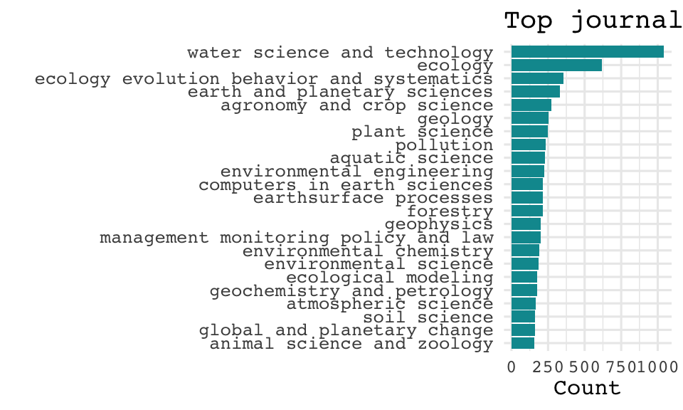

The science informing California’s Groundwater Sustainability Plans
A test case using govscienceuseR
tools
Liza Wood
Tyler A. Scott
Introduction
Understanding the policy that goes into science is important…
Sarewitz Cairney - supply demand mismatch, inability of technical
solutions to resolve political controversies
However, it can be a tedious task… Koontz looks in depth at 12 plans, 1,104 references across them, but these include all kinds of sources: scholarly, articles, organizations, agencies at different levels, etc. Desmaris and Herd (2014) 102 Regulatory Impact Assessments, describing 1,378 scholarly citations, and though recognizing the significant presence of non-scholarly citations, they do not anylze those
Method
This is vignette walking through the steps of the R packages in the
govscienceuseR tool set: referenceExtract,
referenceClassify, indexBuild, and
referenceSearch. Together, these four packages allow
researchers to go from PDF documents to a data frame of indexed
citations in only a handful of steps in the R coding language. The goal
of these tools is to allow researchers working with various types of
policy documents to analyze citations using a systematic and
reproducible approach.
The case
Sustainable Groundwater Management Act… The data we’ll be using are documents for California’s Groundwater Sustainability Plans. These documents are Groundwater Sustainability Agency-level plans, developed in response to the state’s Sustainable Ground Management Act. Passed in 2014, SGMA has required that GSAs (‘Agencies’) develop plans to meeting various sustainability goals for groundwater, including… As such, these documents provide a useful case for evaluating the use of science in policy, as there are a variety of…
Getting started
Installations
Let’s get started by downloading all four packages from the govscienceuseR GitHub page:
devtools::install_github("govscienceuseR/referenceExtract")
devtools::install_github("govscienceuseR/referenceClassify")
devtools::install_github("govscienceuseR/referenceBuild")
devtools::install_github("govscienceuseR/citationSearch")Then load these, and dependent packages, into library. [Note:
All of the dependent packages required should be imported when we load
in these packages, but they currently aren’t]. You may be
prompted to install some of the dependent packages if you do not already
have them, such as keras.
library(referenceExtract)
library(referenceClassify)
library(referenceBuild)
library(citationSearch)
packs = c('data.table', 'dplyr', 'stringr', 'keras', 'tensorflow',
'tidyr', 'purrr')
sapply(packs, require, character.only = T)You’ll also need to install Solr for the final step of the process.
#### Data
The data we’ll be using are documents for California’s Groundwater Sustainability Plans. These documents are available publicly to download from Box. Feel free to download them to your computer to a file that will be considered your document directory. There are 114 plans, which total over 160,000 pages. We will set our document directory to this folder of PDFs.
doc_directory <- "~/Box/reference_classifier/documents_gsp/"Using these GSP documents we’ll be walking through the following steps of the process:

1. referenceExtract
The referenceExtract package from govscienceuseR is
designed to take unstructured PDF documents, feed them through the anystyle.io citation extraction
software, and return tagged citation data in a tabular format.
#### reference_extract()
The first step of extracting references is to input PDF documents
into the reference_extract() function. This function reads
in every PDF in the document directory (doc_dir), and runs them through
anystyle.io. Anystyle extracts probable citations and exports them to
the reference directory (ref_dir) as JSON files. Depending on the number
and size of files, this can take some time. For example, these 114
documents took over an hour to extract.
# Extract probable citations from PDF documents and convert them to .json files
ref_directory <- "data/ref_dir"
reference_extract(doc_dir = doc_directory,
ref_dir = ref_directory,
layout = "none")
#### reference_compile()
Next, the reference_compile() function transforms the
JSON files into tabular data and compiles them all in one data table,
adding the file name as an identifier.
# Compile json files into a singular tabular data table
dt <- reference_compile(ref_directory)After these first two steps we can take a look at our probable citations according to the Anystyle software. Initially, there are 26528 probable citations across these 114 documents.
It is noticeable above that the data provided by Anystyle has its challenges for further analysis. The first is a related to data structure: authors are nested into matrices, some rows (such as the date) have multiple listed values, etc., all of which make the data hard to analyze. For example, here is what seems to be two probable citations combined into one observation:
unnest(dt[204, c(2,3)])## # A tibble: 3 × 2
## date title
## <chr> <chr>
## 1 2017 Long‐Term Socio‐Economic Forecasts by County: Kings County
## 2 2015 Progress Report: Subsidence in the Central Valley, California. For Department of Wat…
## 3 2009 Ground‐water availability in California’s Central ValleyThe second challenge is related to quality: many of the probable citations are not sensible. The Anystyle software seems sensitive to multiple formats like numbers and short-form sentences, such as addresses, resulting in false positive identification of references. For example, here is an address listed as a probable citation from our data:
unlist(dt[148, c(1,3,5)])## author.family
## "When"
## author.given
## "Firebaugh"
## title
## "5:00 - 7:00 PM Firebaugh Middle School MPR 1600 16th Street, Firebaugh, CA Los Banos – Wednesday"
## container-title1
## "PM College Greens Building 1815 Scripps Drive"
## container-title2
## "PM Hammon Senior Center 1033 W. Las Palmas Avenue"
## container-title3
## "Monday"
#### reference_clean()
To try to address the challenges in these probable citations, the
reference_clean() function goes through a series of steps.
For each column the function unlists the data and filters out unlikely
candidates for that column. For instance, if a number listed in the date
column does not match any reasonable date format or expectation, it is
removed. If a string in the URL column actually resembles a DOI, it is
moved to that column. And so on. Furthermore, if there seem to be
multiple citations listed in one row that can be broken apart in
parallel across all of the columns, we unnest these rows. (Note:
depending on the size of the files this function may take some time.
Cleaning these 26528 citations takes about 18 minutes).
# Unnests list structures into tabular data and filters out low probability refs
dt <- reference_clean(dt)This cleaning process has changed probable citations now a bit. Some of the probable citations have been unnested (and therefore expanded) while others have been removed, leaving us with 14423 probable citations. Examples of these probable citations are below:
referenceClassify
The referenceClassify package is designed to take a data
frame of tabular, tagged citation data (author, year, container,
publisher, doi, etc), look for exact matches between those tags and
various high-level indices (mainly journal and agency names), and begin
to classify probable citations into these high-level categories. These
indices are 1:) an index of academic journals from the sjr
package relying on the Scimago
database, 2) an index of academic conference papers/proceedings also
from the Scimago database, 3) and an index of US state and federal
agencies, curated by the package authors. All three of these indices are
built into this package and can be accessed with
data(scimago.j) for journals, data(scimago.c)
for conferences, and data(agencies) for agencies.
#### prepared_by() and
journal_disambig()
[Note: Should these be moved to the cleaning function, or to the other package?]
Before classifying our probable references, we can further clean and
refine these potential citations with the prepared_by()
function, which removes commonly-seen lead-ins to references (‘prepared
for/by’, etc.) to improve exact matching.
dt <- prepared_by(dt, x = 'container', y = 'author', z = 'publisher')Additionally, we disambiguate the journals with the
journal_disambig() function, which references indices of
common journal abbreviations and through manual cleaning of journals
referenced in transportation documents.
dt$container <- journal_disambig(dt$container)
#### regex_classify()
Now with probable references as ‘clean’ as possible, we use regular
expressions to classify our data based on exact matches using the
regex_classify() function. This function does two things.
First it looks across all of the columns for exact matches to our
indices, and if there is an exact match, it pulls out that value into a
‘input’ column. If there is no exact match, the value in the input
column will be selected in the following order of preference: doi,
container, publisher, title, author. Second, based on the matches the
function will assign the potential citation into one of four classes:
journal, agency, conference, or none. If none of the potential
citations’ data is an exact match to any of the indices, the
classification is NA.
# Extract most descriptive 'input' and look for exact match to index
dt <- regex_classify(dt, 'container')Based on these classifications, we can see the counts of exact matches, and which ones have not been classified.
| Agency | Conference | Journal | Not a citation | Unclassified |
|---|---|---|---|---|
| 1867 | 3 | 997 | 146 | 10899 |
#### keras_classify()
Next we want to classify the probable references that are not exact
matches to any of our indices. To do this, we use
keras_classify() input our probable into a neural network
trained to predict the reference class. To train this model, we used
data from Environmental Impact Statements, classified through both
manual classification and the semi-automated regex classification
explained above.
# Use the descriptive 'input' to probabilistically identify the reference class
## Note: Need to set this wd right now because I can't actually get the model object to save within the package itself
setwd("~/Documents/Davis/R-Projects/referenceClassify/")
# Something is wrong with the auto_input
predictions <- keras_classify(dt, probability = .85,
'container', auto_input = F,
'training_input')
dt <- cbind(dt, select(predictions, predict_class))Because we ran this model on the whole data frame, we can compare our regex classification with the Keras classifications to get a sense of the model performance.
| Incorrect | Match | Classified as unsure |
|---|---|---|
| 30 | 2801 | 182 |
These results, altogether, suggest that the Keras model is 93% accurate in its prediction of the citations we are able to do exact matching for. Now, let’s unify the classification columns and have a look at the total for each estimated grouping.
| Agency | Conference | Not a citation | Journal | Unsure |
|---|---|---|---|---|
| 3675 | 5 | 3163 | 1856 | 5213 |
And we’ll tidy up these data by filtering out the citations classificied to ‘delete’ (the false positives) in preparation for our indexing in the next step.
dt <- dt %>%
select(-c(predict_class, method_comparison)) %>%
filter(class != "delete")
#### Interim check in: Journals and agencies from exact
matching
So far, we’ve identified exact matches to our high-level indices (journal, agency, conference) and then used machine learning to classify citations that are not exact matches so that we can begin to figure out their source. At this interim stage, we can take a look at the high-level classifications across citations, and the journals and agencies for which we’ve found exact matches.
First, let’s take a look at the high-level matches. A reference list was required by DWR for GSPs, and indeed we see that all 114 of the documents have references that we can identify as either a scholarly journal or agency. Based on our tool’s probabilistic tags, it looks like the number of references ranges from 1 to 128, with 24 being the average number of classified references. That average differs between references classes, whereby the average number of journal references is 16 and the average number of agency references is twice that, at 32.
Below are the top 15 references journals and agencies identified by our exact matching strategies.
[Note: I need to exact match agency]
cowplot::plot_grid(p_jour, p_agency, rel_widths = c(1, 1))
indexBuild
Now that we have a general sense of what kind of citation types are
represented within the probable citations, the next step is to try to
index these citations exactly.
#### Identify index concepts
First we need to generate an index. The indexBuild function wraps around the OpenAlex API
First, what are the areas we already have known references from? We koad in the Scimago database, including journal metdata, to get an understanding of what journals can be identified through exact matching.
themes <- dt_journals %>%
select(sourceid, journal_title, cat1:cat15) %>%
pivot_longer(cols = cat1:cat15,
names_to = "number",
values_to = "cat") %>%
filter(!is.na(cat)) %>%
mutate(cat = trimws(str_remove_all(cat, '\\(Q\\d\\)'))) %>%
mutate(cat = trimws(str_remove_all(tolower(cat),
'\\(miscellaneous\\)|,|-'))) %>%
group_by(cat) %>%
count() %>%
arrange(n) %>%
mutate(cat = factor(cat, levels = .$cat))
keywords <- tidytext::unnest_tokens(themes, word, cat) %>%
dplyr::filter(!word %in% tidytext::stop_words$word) %>%
mutate(word = textstem::lemmatize_words(word)) %>%
unique()Let’s use these themes and keywords to inform our index creation. I
build in a quick bit of sleep time for querying the concepts from
openAlex, then apply this functions across all of the themes and
keywords existing in the data. (Note: This querying of over 200 concepts
takes ~5 minutes.)
#### queryConcepts()
query_slowly <- function(x){
index <- queryConcepts(concept_string = x,
per_page = 50)
return(index)
Sys.sleep(1)
}
index <- lapply(c(themes$cat, keywords$word), query_slowly)
# For whatever reason there was no description column for 7
index[[12]]$description <- ""
indexdf <- do.call('rbind', index) %>% unique()Now we have a number of resources representing the concepts from our existing data. Here is a random look at some of them.
What we end up is a list of concepts, related to which are different ‘works’, or specific citations. We can extract the works from those concepts below. I currently break this into two extraction rounds, small and large, because they need to be handled differently. This extraction c
#### extractWorks()
sapply(indexdf$id, FUN = function(x){
extractWorks(mailto = "belwood@ucdavis.edu",
concept_page = x,
dest_file = paste0("~/Box/govscienceuseR/openalex_index_gsp/",
stringr::str_extract(x,'[A-Za-z0-9]+$'),
"_2000_2020", ".json.gz"),
per_page = 200, # must be between 1 and 200
to_date = 2022,
from_date = 2000,
sleep_time = 0.5)
})
#### works2dt()
jsons <- list.files("~/Box/govscienceuseR/openalex_index_gsp/", full.names = T)
# Anything that is 23 is empty
jsons <- jsons[file.size(jsons) > 23]
t1 <- Sys.time()
records <- lapply(jsons, works2dt)
recordsdf <- do.call("rbind", records)
t2 <- Sys.time()We’ve generated quite a wide database, including 1388002 records in our index. However, this likely leaves out edge cases, and we are developing ways to develop broader indices.
4. referenceSearch()
Now we have our probable citations and their groupings, we have an index to match them to, and now we want to probabilistically match them.
Let’s isolate our probable citations that would likely map onto our index of academic reference.
dt_solr <- dt %>%
filter(class == "journal") %>%
select(title, author, year, publisher, container,
doi) %>%
rename("journal_title" = container,
"authors" = author) %>%
mutate(year = as.numeric(year))
queries <- create_queries(dt_solr)This is where you’ll need your Solr instance running In your command line/terminal, navigate to your solr download, then start a cloud instance by ..
path/to/solr.9.0.1/bin/solr start -c~/Applications/solr-9.1.0/bin/solr start -c## *** [WARN] *** Your open file limit is currently 10496.
## It should be set to 65000 to avoid operational disruption.
## If you no longer wish to see this warning, set SOLR_ULIMIT_CHECKS to false in your profile or solr.in.sh
## *** [WARN] *** Your Max Processes Limit is currently 2784.
## It should be set to 65000 to avoid operational disruption.
## If you no longer wish to see this warning, set SOLR_ULIMIT_CHECKS to false in your profile or solr.in.sh
## Waiting up to 180 seconds to see Solr running on port 8983 [|] [/] [-] [\] [|] [/] [-] [\] [|] [/] [-] [\] [|] [/] [-] [\] [|] [/] [-] [\] [|]
## Started Solr server on port 8983 (pid=2684). Happy searching!
##
## #records <- "~/Box/govscienceuseR/openalex_index_gsp/"
colnames(recordsdf)[c(1,2,3,5,7,8,10,12)] <- c("source", "title", "doi",
"year", "miscid",
"journal_title",
"publisher", "authors")index_records(recordsdf, collection_name = "gsp_index", overwrite = T)This does not run, I get ” Error: 400 - undefined field year ”
results <- search_collection(q = queries[3],
collection_name = "WOS_demo",
topn = 3)Waiting to run then, then
results = list()
count = 1
for (q in queries[1:10]) {
res = search_collection(q, collection_name = "gsp_index")
res$id = count
res$q = q
results[[count]] = res
count = count + 1
}
results_df = do.call(dplyr::bind_rows, results)~/Applications/solr-9.1.0/bin/solr stop## Sending stop command to Solr running on port 8983 ... waiting up to 180 seconds to allow Jetty process 2684 to stop gracefully.
## [|] [/] [-] [\]